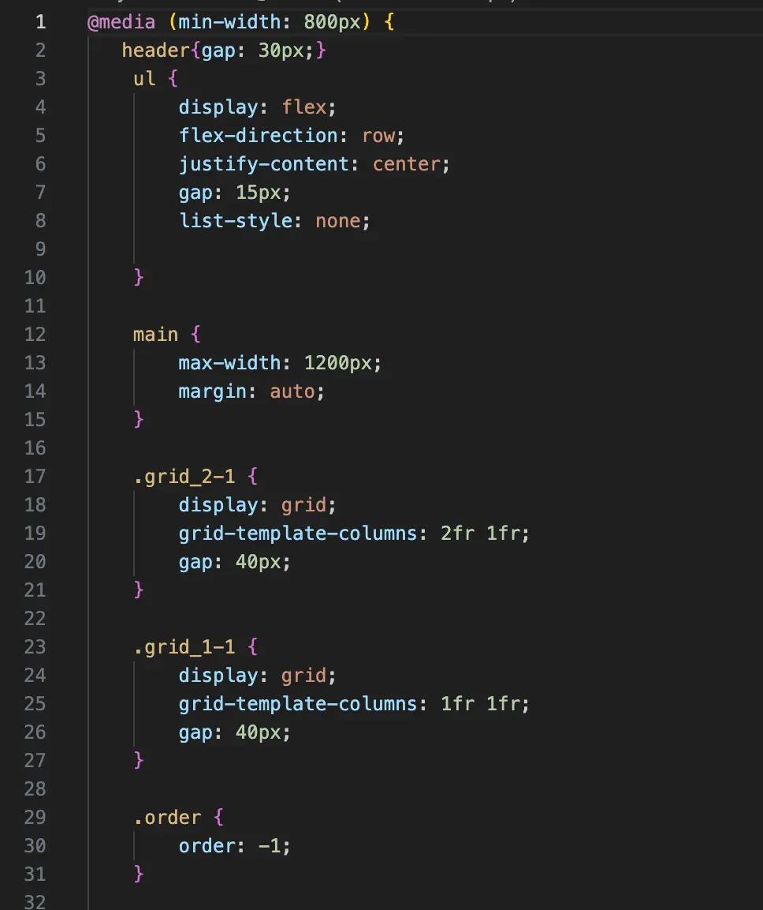

Tema 3: Grundlæggende UX/UI
I dette emne har vi lært at arbejde med brugeroplevelse (UX) og brugergrænseflade (UI), herunder også wireframes. Vi lærte blandt andet også, hvordan man udfører fx trunk test.I denne opgave har jeg brugt min erfaring fra mit tidligere arbjdet som inspiration til website. Jeg fandt ud af, at jeg godt kan lide at lavet websites som er enkle i farver.Jeg havde faktisk lavet en prototype på Figma, som var meget farverig. Jeg endte dog med ikke at bruge den og startede helt forfra med et mere mørkt design.Mit websted blev dog ikke så responsivt, som jeg havde håbet, og det er noget, jeg forsøger at gøre bedre nu.